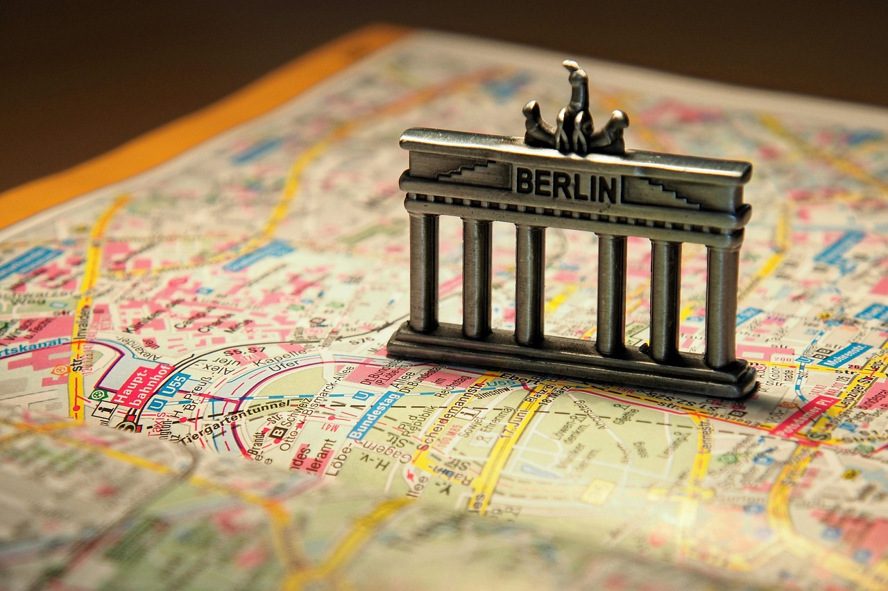
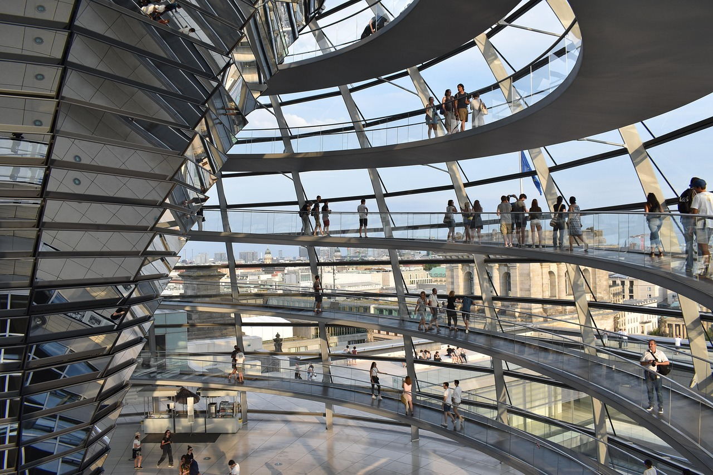

Best Places of Belin

Berlin, the capital of Germany, is a vibrant and historically rich city known for its dynamic culture, diverse architecture, and thriving arts scene. From the iconic Brandenburg Gate and remnants of the Berlin Wall to modern glass skyscrapers, the city blends history with innovation. Its districts, like Mitte and Kreuzberg, offer everything from world-class museums and historical landmarks to trendy cafés and underground music scenes.
Despite its historical significance, Berlin is also a global hub for startups, technology, and creativity. The city's affordability (compared to other European capitals) and open-minded atmosphere attract artists, entrepreneurs, and professionals from around the world. Green spaces like Tempelhofer Feld and Tiergarten provide a balance to the city's fast-paced energy, making Berlin a unique and constantly evolving place to live and visit.
- Reichtag Dome
- Brandenburg Gate
- Bode Museum
Reichtag Dome
The Reichtag Dome is Germany's historic parliamentary building in Berlin, known for its striking glass dome that symbolizes political transparency. Originally completed in 1894, it has witnessed key moments in German history, from the 1933 fire that fueled Nazi propaganda to its post-reunification restoration in the 1990s. Today, it houses the Bundestag (German parliament) and is a popular attraction, offering visitors panoramic views of the city while standing as a powerful symbol of democracy and resilience.

Brandenburg Gate
The Brandenburg Gate is one of Berlin's most iconic landmarks, symbolizing unity and peace. Built in the late 18th century, it was originally a city gate but later became a powerful historical site, witnessing Napoleon's triumph, Nazi rallies, and the Cold War division when it stood near the Berlin Wall. Today, it represents Germany's reunification and is a must-visit attraction, surrounded by Pariser Platz and leading to the grand Unter den Linden boulevard.

Bode Museum
The Bode Museum, located on Berlin's Museum Island, is a stunning example of Baroque and Renaissance Revival architecture. Opened in 1904, it houses an impressive collection of Byzantine art, sculptures, and coins, spanning from the Middle Ages to the 18th century. Its domed halls and elegant galleries create a unique atmosphere, making it a must-visit for art and history enthusiasts.